Brand book
Plateforme
Ce que la maison est, pour qui, et comment elle parle. Une page, pas trois.
Maison cherche, pour quelques acheteurs par an, la maison rare, partout en Belgique.
biens présentés par recherche, dont certains hors marché
interlocuteur, du premier entretien aux clés
bandeau, compte à rebours ou relance. Jamais.
Le chasseur discret, en Belgique.
Familles et dirigeants qui achètent une maison rare en Belgique, souvent une villa sur parc, parfois un appartement de caractère en ville. Ils ont peu de temps, refusent les portes ouvertes et veulent un seul nom au téléphone.
Exclusive, sensorielle, calme, contemporaine. Elle retire plutôt qu'elle n'ajoute. Elle parle matières, lumière, distances et surfaces, jamais superlatifs.
Sur le segment villa, des acteurs comme Rodenburgh Immobiliën ou Engel & Völkers tiennent les places locales. Le secteur converge vers le bleu marine et le serif à fort contraste. Maison se distingue par une couleur d'atmosphère, le bordeaux, et par la rareté : quatre biens en ligne, pas quarante.
Logo
Une signature à la main. Rien d'autre.
La signature
« Maison », tracé à la main par le fondateur, d'un seul geste. Aucune retouche : le trait est passé en bouts ronds et en bordeaux, c'est tout. La marque s'appelle Maison, sans autre mot. Le nom du fondateur reste dans les coordonnées, pas dans la marque.
Négatif ivoire sur bordeaux
Monochrome noir chaud · gravure, tampon
Trait fort · panneau, gaufrage
Le M, en réserve
Le premier tracé, seul. Réservé aux formats où le mot entier ne se lit plus : favicon de 16 px, avatar rond. Partout ailleurs, la signature entière.
Bordeaux sur papier
Ivoire sur bordeaux
Ivoire sur noir chaud · menu
32 px · 16 px · 34 px · 22 px
Trait
Deux épaisseurs seulement : trait 2 (sur 100 de hauteur) pour l'écran et le papier, trait 3 pour le panneau et le gaufrage. Bouts et jonctions ronds. Jamais de contour, jamais de remplissage, jamais d'ombre.
Zone de protection et tailles
La hauteur du « a » sur les quatre côtés ; rien n'y entre. Sur la carte et le panneau, le blanc est plus grand encore.
| Version | Écran | |
|---|---|---|
| M seul | 16 px de haut | 6 mm |
| Signature | 90 px de large | 22 mm |
Sous ces tailles, revenir au M seul.
Mésusages
Couleur
Six teintes nommées. Le bordeaux est une atmosphère, pas une couleur de texte.
Ivoire
- HEX
- #E8E1D5
- RVB
- 232 · 225 · 213
- CMJN
- 0 · 3 · 8 · 9
- Pantone
- 7527 C
- Rôle
- Fond de toutes les pages
Papier
- HEX
- #F3EEE6
- RVB
- 243 · 238 · 230
- CMJN
- 0 · 2 · 5 · 5
- Pantone
- Warm Gray 1 C
- Rôle
- Surfaces posées sur l'ivoire
Noir chaud
- HEX
- #1A1412
- RVB
- 26 · 20 · 18
- CMJN
- 0 · 23 · 31 · 90
- Pantone
- Black 7 C
- Rôle
- Texte courant, menu
Bordeaux
- HEX
- #390517
- RVB
- 57 · 5 · 23
- CMJN
- 0 · 91 · 60 · 78
- Pantone
- 4975 C
- Rôle
- Titres, boutons, une page forte
Bronze
- HEX
- #A38560
- RVB
- 163 · 133 · 96
- CMJN
- 0 · 18 · 41 · 36
- Pantone
- 4655 C
- Rôle
- Filets, texte sur bordeaux ou noir
Bronze encre
- HEX
- #6F5536
- RVB
- 111 · 85 · 54
- CMJN
- 0 · 23 · 51 · 56
- Pantone
- 7568 C
- Rôle
- Labels, lieux, chiffres sur fond clair
Ratios d'usage
Le calme vient de la proportion. Une seule surface bordeaux par page (le bloc Parcours sur l'accueil, le panneau à vendre en print). Le bronze n'est jamais un fond.
Contrastes mesurés
| Texte | Fond | Ratio | Usage autorisé |
|---|---|---|---|
| Noir chaud | Ivoire | 14,0 | Tout texte |
| Bordeaux | Ivoire | 13,4 | Tout texte |
| Ivoire | Bordeaux | 13,4 | Tout texte |
| Bronze encre | Ivoire | 5,3 | Labels, corps, chiffres |
| Noir chaud 66 % | Ivoire | 5,2 | Texte secondaire |
| Bronze | Bordeaux | 5,0 | Labels et chiffres sur bordeaux |
| Bronze | Noir chaud | 5,3 | Texte sur menu |
| Bronze | Ivoire | 2,7 | Filets 1 px seulement, jamais du texte |
| Bordeaux | Noir chaud | 1,05 | Aplats décoratifs seulement |
Seuils WCAG AA : 4,5:1 pour le texte courant, 3:1 pour le grand texte (24 px ou 18,5 px gras). Toutes les combinaisons de texte du site passent à 5:1 ou plus.
Typographie
Deux familles. Une condensée qui claque en grand, un sans-serif qui s'efface en petit.
Morganite
Bold pour les titres, Medium pour les chiffres, Light en contrepoint dans le wordmark. Toujours en capitales, interlignage 0,9, jamais en paragraphe. Sous-ensemble Latin en WOFF2 : 10 KB par graisse.
Plus Jakarta Sans
Light pour le corps, Regular pour les liens et les valeurs, Medium pour les labels et les noms. Jamais sous 16 px, en rem. Google Fonts, licence OFL.
Échelle φ depuis 16 px
Chaque pas multiplie par φ = 1,618. Le label est un demi-pas sous le corps (16 / √φ) : c'est le minimum lisible pour des capitales espacées à 0,24 em.
- Corps : 16 px, interlignage 1,618, ligne de 34 em au plus (60 à 66 caractères).
- Titres : interlettrage +0,01 em, interlignage 0,9,
text-wrap: balance. - Labels : capitales, +0,24 em, Medium, bronze encre.
- Boutons : capitales, +0,16 em, 12 px, bordure 1 px bordeaux.
- Chiffres tabulaires sur tous les prix, surfaces, distances :
font-variant-numeric: tabular-nums.
| Villa sous les chênes | 2 950 000 € |
| Maison de verre | 3 295 000 € |
| Pavillon des pins | Sur demande |
| Maison du parc | 1 690 000 € |
Photographie
Une seule campagne, même quand les biens viennent de photographes différents.
Dans la marque
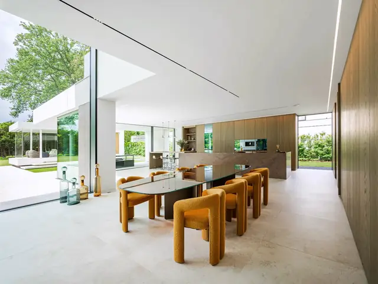
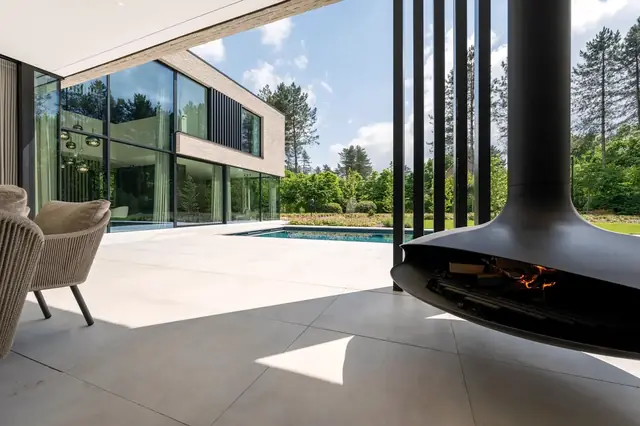
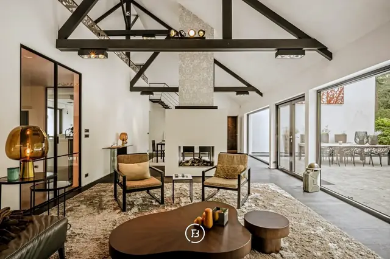
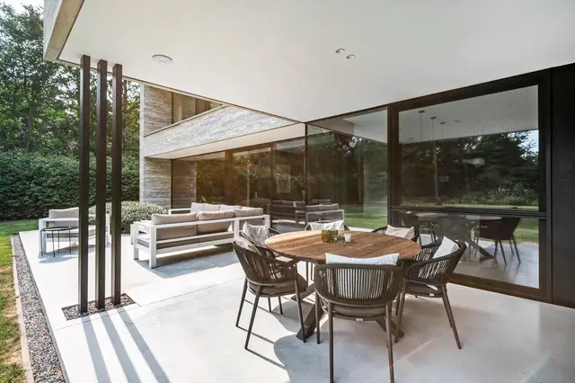
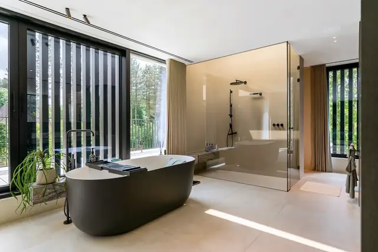
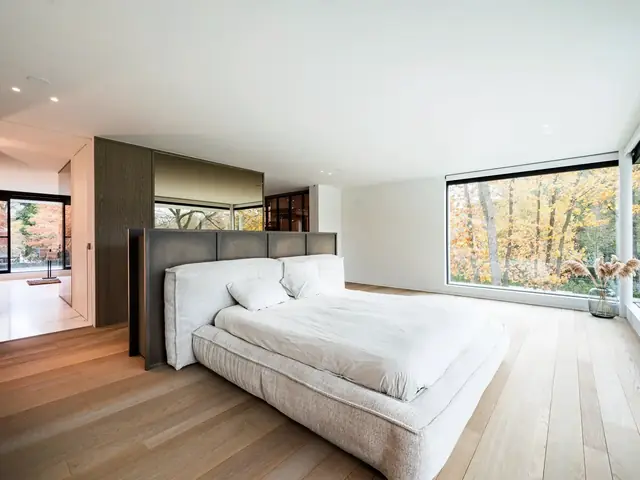
Hors marque (simulations sur la même image)
Balance des blancs corrigée image par image d'abord (4 800 à 5 200 K), puis un même look appliqué à toutes : blancs crème, ombres profondes et contrôlées, hautes lumières légèrement dorées, saturation −7 %. Un LUT ne corrige pas une balance ratée ; il vient après.
Aucune propriété, marque, œuvre ou personne identifiable. Une licence libre de droits ne couvre pas le bâtiment photographié : il faut une autorisation du propriétaire, ou une image dont le bien n'est pas reconnaissable. Les photos de ce projet conceptuel sont des images d'illustration à remplacer avant toute publication commerciale.
Éléments graphiques
Filets, matières, grain. Une matière par page, pas une de plus.
1 px bronze à 45 % (séparation), 80 % (lien), bordeaux (survol). Jamais plus épais.
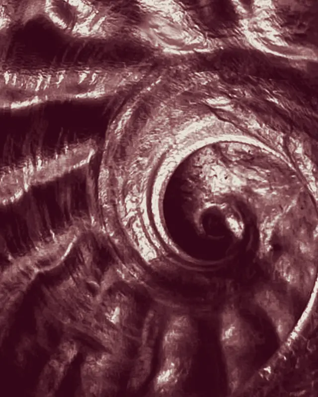
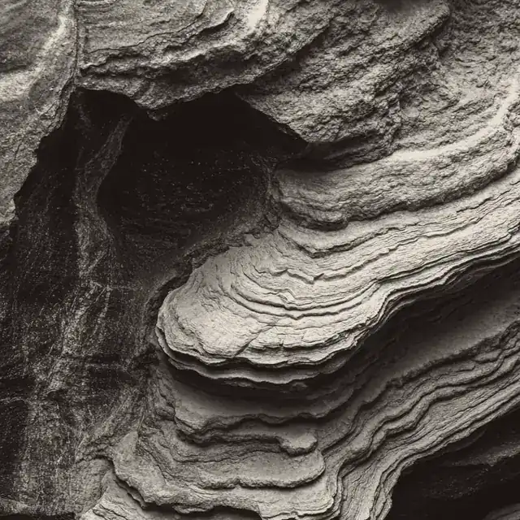
Fossile teinté bordeaux sur l'accueil, pierre teintée noir chaud sur la fiche de bien. Le temps long et la strate : ce que la maison cherche.
Grain papier à 4,5 % sur le site, montré ici à 35 % pour être visible. Il se sent, il ne se voit pas.
Tout est partagé à 38,2 / 61,8 : le hero (panneau ivoire / photo), les colonnes label / contenu, la galerie / fiche. Les visuels larges sont des rectangles d'or. Les espacements suivent Fibonacci : 8 · 13 · 21 · 34 · 55 · 89 · 144 · 233. Rayons de 2 à 5 px, jamais de carte arrondie.
Voix
Phrases courtes. Concret. On décrit, on ne vend pas.
- rare, juste, précis, calme
- hors marché, entretien, un seul interlocuteur
- matières, lumière, orientation, distances, surfaces
- « Trois à cinq biens au plus. »
- « Le dossier complet est remis sur demande. »
- d'exception, excellence, prestige, luxe, unique
- exclusif en accroche, coup de cœur, opportunité
- ne manquez pas, contactez vite, dernières chances
- « ce n'est pas X, c'est Y »
- tout point d'exclamation
Avant, après
« Merci. Nous vous rappelons sous deux jours ouvrés, à l'heure qui vous convient. » Un délai précis, pas une promesse.
Applications
Le système sur ce que le client tient en main. Maquettes composées en CSS, à partir des mêmes jetons.
Papier coton 400 g, gaufrage à sec du monogramme au recto. Un seul aplat bordeaux.
Belgique
maison.be
d'entretien
Madame, Monsieur,
Vous cherchez une maison de plain-pied ou à étage unique, sur un parc d'au moins 3 000 m², à vingt minutes d'Anvers au plus. La lumière du matin compte davantage que la piscine. Le calme prime sur la proximité du centre.
Nous vous présenterons trois biens, dont un hors marché, d'ici la fin du mois. Chaque proposition sera argumentée.
Esteban Gilles
Aluminium laqué bordeaux, lettrage ivoire. Pas de prix, pas de photo : le panneau signale, il ne vend pas.

les chênes
La pièce maîtresse : remise en main propre après la visite. Couverture ivoire, une photo, un nom.
Bonjour Madame Peeters,
Je vous confirme la visite privée de la Villa sous les chênes jeudi à 17 h, à l'heure où le séjour reçoit le soleil de l'ouest. Le dossier complet suit ce message.
Bien à vous,
Maison · Belgique
+32 4 00 00 00 00
maison.be
Chasseur de biens rares · Anvers
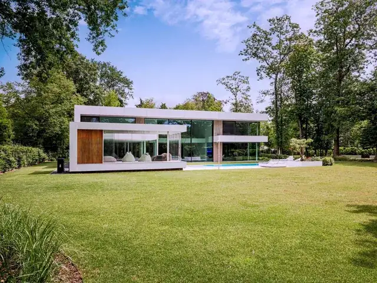
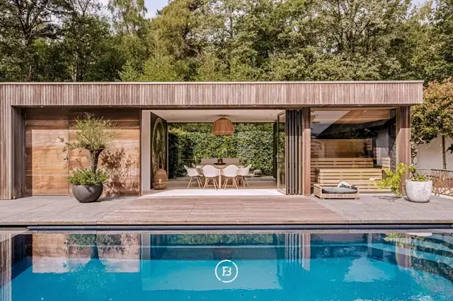
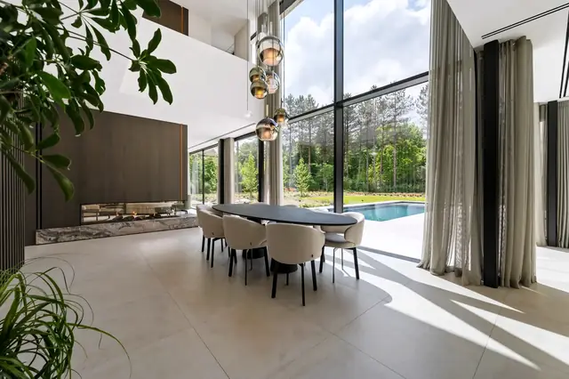
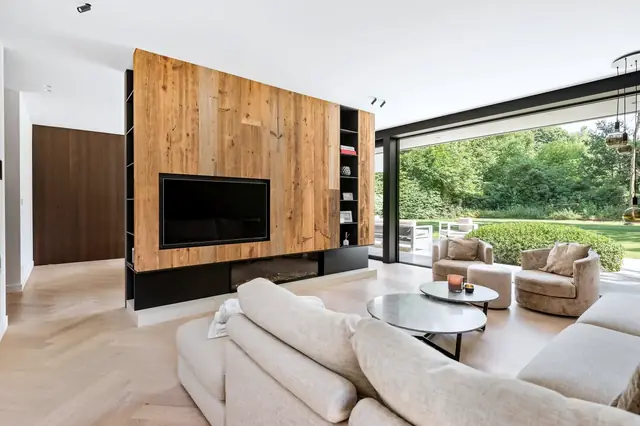
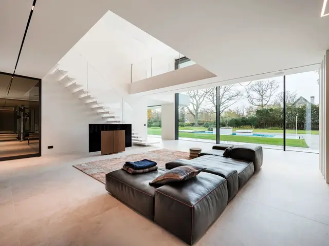
Un tiers de texte, deux tiers de photo. Jamais de prix, jamais d'adresse.